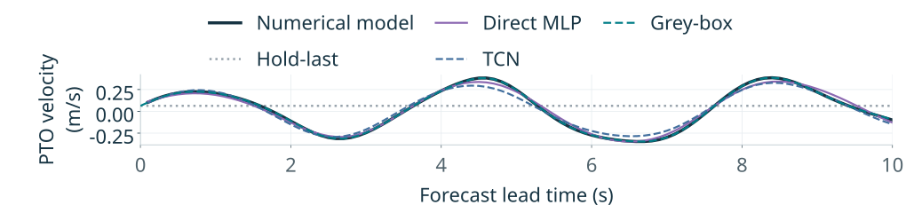
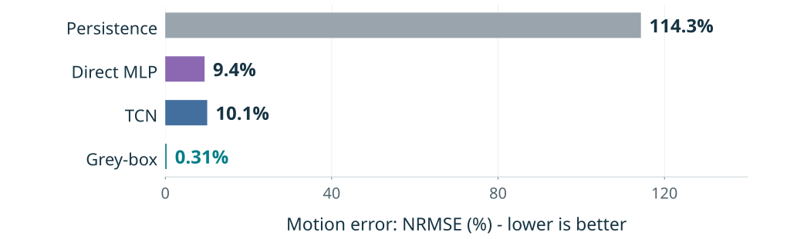
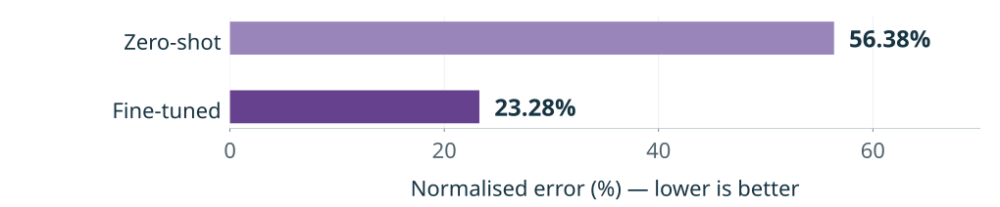
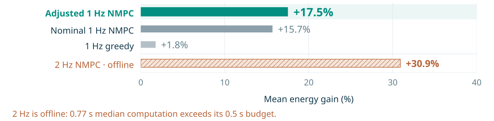
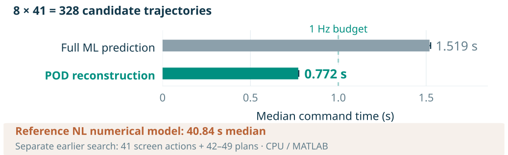
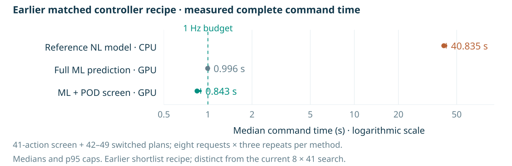

1 Hz implementation
Two moves, then replan.
A 0.5 sB* 0.5 s↻
The adjusted controller applies 88% of the selected second command, clipped to the admitted damping range. This is the variant behind the 17.5% result.
UWA honours research WaveX
Learn the nonlinear forces. Predict the coupled motion. Choose how to capture the next wave.
Predictive control in simulation
+17.5%
Adjusted 1 Hz nonlinear model predictive control (NMPC), compared with fixed damping.
Mean paired gain across 36 wave realisations in nine sea states. Study scope ↓
The approach
Ocean waves drive coupled motion across the device. The controller needs a useful prediction of that motion quickly enough to compare its next damping commands.
Retain the nine-DOF mechanics and radiation memory. Learn the nonlinear correction from instantaneous displacement and velocity, including quadratic body drag and geometry-dependent buoyancy and gravity.
Proper orthogonal decomposition (POD) reconstructs 41 continuation choices from four anchor energies, for each of eight possible first moves. This makes a wider search affordable.
Finite-candidate NMPC compares 328 two-command plans over a 10 s prediction horizon, selects the greatest predicted energy, then replans as measurements arrive.
After predicting the state at command application, the controller scores a first damping command for 0.5 s and a second command for 9.5 s. POD reconstructs a separate energy curve for every first move.
1 Hz implementation
The adjusted controller applies 88% of the selected second command, clipped to the admitted damping range. This is the variant behind the 17.5% result.
2 Hz implementation · offline
Only the first command is committed. More frequent replanning reached 30.9% mean energy gain, but calculation exceeded the 0.5 s update budget.
Both implementations retain the same 1 s command application delay and score a 0.5 s first move followed by a 9.5 s continuation. The search diagram starts from the predicted state at command application. At 1 Hz, two 0.5 s moves are committed; at 2 Hz only the first 0.5 s move is committed. The comparison therefore changes the replanning and commitment strategy together.
The complete POD calculation includes four initial-screen rollouts, eight short first moves and 32 long continuation anchors. It scores 328 candidate sequences without directly simulating all 328 full motion trajectories.
Motion prediction
A persistence forecast holds every current displacement and velocity value unchanged. The comparison below uses saved predictions from the same 10 s forecast windows, alongside direct neural models and the physics-informed grey-box model.


Common evaluation: 17,152 forecasts per model across two waves and eight damping settings, with 100 common future samples over 10 s. The 18 channels comprise nine displacements and nine velocities. Each channel’s root-mean-square error is divided by the centred population standard deviation of its common true signal, then averaged equally across channels, settings and waves. This normalised error can exceed 100%. Holding q and v independently is a forecasting baseline; it is not a physical trajectory satisfying q̇ = v when the held velocity is nonzero.
Model scope: these are previously trained, frozen model packages with different native training sets and input/history budgets. The comparison is not an architecture-only ablation. The two model-held waves were previously exposed in a separate spectral study and are not globally blind test data.
Reproducibility: existing predictions were checked against their archived results before recomputing the common-window comparison. Persistence was calculated directly from the archived boundary states. No new simulation, training or model inference was needed.
Separate changing-damping validation
On its own matched validation windows, fine-tuning reduced Chronos-2’s mean motion NRMSE from 56.38% to 23.28%. This study uses a different data regime from the static-damping benchmark above.

The archived zero-shot and LoRA-fine-tuned models use identical evaluation truth, context, future damping and forecast windows. The fine-tuned model was trained on two wave realisations and evaluated on a third validation wave, with no held-test data included.
The JONSWAP sea state has Hs = 0.75 m and Tp = 4.82 s. Shared damping switches every 20 s among ten levels from 10,000 to 100,000 N s/m. The 177 validation events span 360–3,880 s after the 300 s ramp; a later recovery phase is excluded. Predictions use 200 future nodes at 20 Hz, and the plotted score uses stored componentwise median forecasts rather than probabilistic trajectories.
The existing LoRA adapter used rank 16, alpha 32 and 1,000 training steps. This page reuses audited archived outputs; no new training or inference was run for the poster revision.
Results
The updated control study spans nine JONSWAP sea states. Each controller is compared with fixed damping on the same wave realisation.

0.77 s
Typical command calculation
The adjusted 1 Hz controller had a 0.771 s median calculation time and completed every measured command within 1 s. The 2 Hz controller’s approximately 0.772 s median exceeded its 0.5 s update interval; every measured command missed that budget.
The current matched timing benchmark holds the predictor, all 328 candidate plans and initial screening fixed. Full ML prediction directly evaluates every long continuation; POD reconstructs their energy scores from sparse anchors.


Numerical simulation: nine-DOF dynamics with quadratic body drag and geometry-dependent nonlinear buoyancy/gravity. Incident water velocity is fixed to zero in the drag calculation; no mooring contribution is implemented. These results are not hardware trials.
Sea states and scoring: significant wave heights 0.75, 1.5 and 2.5 m crossed with peak periods 4.82, 6 and 8 s. Four paired wave realisations per state; 300 s scored after a 300 s ramp and 60 s preparation. The combined 36-wave cohort is descriptive: it includes an earlier exposed two-wave cohort and two fresh confirmation waves per state.
Prediction and control: 60 s motion history, a 10 s prediction horizon and ideal recorded wave preview. The shared damping command acts on all three power-take-off coordinates, with 41 admitted values from 2,000 to 100,000 N s/m. The adjusted variant multiplies only its second executed command by 0.88 and clips it to that range; prediction and selection remain nominal.
Interpretation: the fixed 5,000 N s/m comparator is not a per-state optimised passive controller. Gains are mean per-wave percentage changes in mechanical power-take-off energy, not site-weighted annual yield. Timings are warm computation measurements on the study hardware; they do not establish deployed hardware performance.
Next steps: the POD heads trained on constant-damping 10 s forecasts are reused for conditional 9.5 s continuations; this transfer still needs validation. Causal wave forecasts, actuator limits and device trials remain next steps.
Read the work
This page is the companion to the UWA CSSE 50th anniversary poster. It brings the current results and earlier proceedings together in one place.
Two poster designs share the same evidence. Compare the equation-led explanation with the illustrated surface-discretisation explanation.
The coupled force balance, learned nonlinear correction and predictive search presented through equations and data.
Open the equations posterDesign B · Surface discretisation · PDFAn illustrated wetted-surface explanation alongside the same motion and control evidence.
Open the illustrated posterThe CEED proceedings version. Its figures and results have subsequently been updated; use the posters and this page for the newer control study.
Read the CEED versionContinue the conversation
I’m Reuben, researching machine learning for nonlinear dynamics and control at UWA, with WaveX.